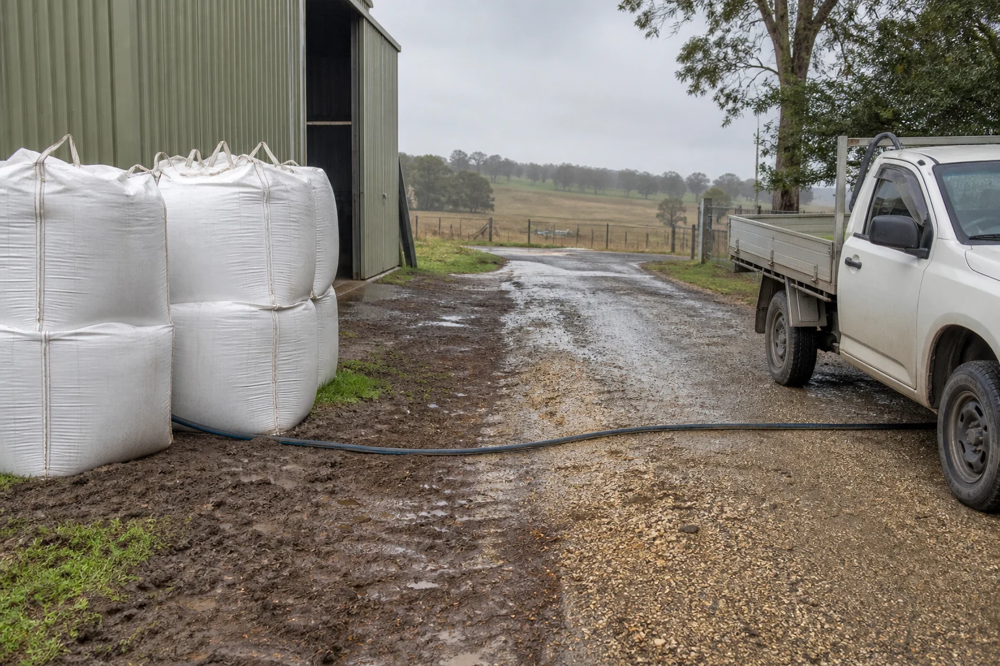
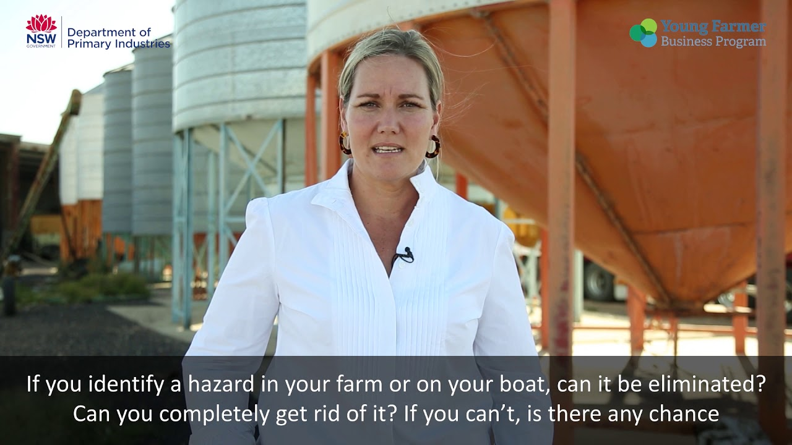

Learning purpose
Use evidence from a farm scene to separate a hazard, possible harm, likelihood and consequence.
Task 1 · Lesson 2 of 4
Use evidence from a farm scene to separate a hazard, possible harm, likelihood and consequence.
Learning purpose
Use evidence from a farm scene to separate a hazard, possible harm, likelihood and consequence.
Success criteria
Learning boundary
Supplementary learning and formative practice only. Current RTO assessment, local procedures and authorised supervision control real work.

A hazard is a source or situation with the potential to cause harm. On a farm it might involve plant, animals, chemicals, manual tasks, electricity, noise, dust, uneven ground, weather or the way work is organised.
Risk considers what harm could occur and how likely it is in the actual circumstances. The same hazard can create different risk when exposure, people, terrain, visibility, equipment condition or nearby work changes.
Strong hazard recognition describes what can be seen, heard, measured or reliably reported. 'A loose gate latch beside a livestock route' is more useful than 'the yards are unsafe' because it identifies a condition and context.
Avoid jumping straight to blame or a preferred fix. First record the hazard, who or what could be exposed, the possible harm and the information still needed from the current workplace risk process.
Likelihood asks how exposure could occur under the real task and conditions. Consequence considers the possible seriousness of harm, not how inconvenient the delay may be.
The current workplace risk matrix controls any rating used on site. This lesson develops the reasoning behind a rating, but it does not supply or replace local categories, scores or acceptance thresholds.

Farm hazards change with weather, animal movement, deliveries, vehicle traffic, breakdowns and changes to the work location. A task that was appropriately planned can require review when new evidence appears.
Monitoring means checking whether assumptions and controls still match the scene. A learner should pause and report when the actual condition is outside the confirmed plan or their authority.
Fictional worked example
Observed evidence: A fictional team planned to carry empty crates along a firm lane, but rain has made a section muddy and a delivery vehicle is now reversing nearby. Decision and reason: The original exposure has changed because footing and vehicle movement now overlap. Safe action: The learner pauses outside the affected area and reports both observations. Result: The supervisor reviews the route and timing using the local risk process. Next check or record: The learner records the changed conditions and the confirmed direction, without inventing a risk score.
Familiar work can become normalised, which makes a hazard easier to overlook. Repetition is not evidence that a condition is safe; it only shows that the work has occurred before.
A consistent scan considers people, plant, animals, environment and task interaction. It also includes less visible factors such as fatigue, isolation, communication barriers and workload pressure where they affect safe work.
A concise report links four ideas: the observed hazard, possible exposure, possible harm and changed condition. This gives the designated person a usable starting point for the workplace's assessment and control process.
Keep uncertainty visible. If the learner cannot confirm equipment serviceability, terrain stability or another fact, state that it is unknown and needs checking rather than guessing that the risk is low.

External media loads only after you choose it.
Source-linked video
Why watch: See hazard and risk separated in a real farm context before applying the distinction to a new scene.
Watch for: Which part of the example is the hazard, which part is the possible harm, and what evidence would change the risk judgement?
Formative practice
Each option explains the consequence. These answers save only on this device.
Written application
Apply and keep a learning record
Use a teacher-provided photograph or fictional scene. Record the hazard, exposure, possible harm and changed condition, then name the person or process that would confirm the next action.
Learning record: A supplementary-learning hazard story that another person could understand without seeing an invented risk score.
Lesson responses and the activity are formative learning only. Formal sufficiency and competence remain with the current RTO process.
Source basis: AHCWHS202 Release 1 and SafeWork NSW First Steps to Farm Safety guidance on identifying hazards, assessing likelihood and severity, monitoring changing farm conditions and reporting. The local risk matrix controls real ratings.